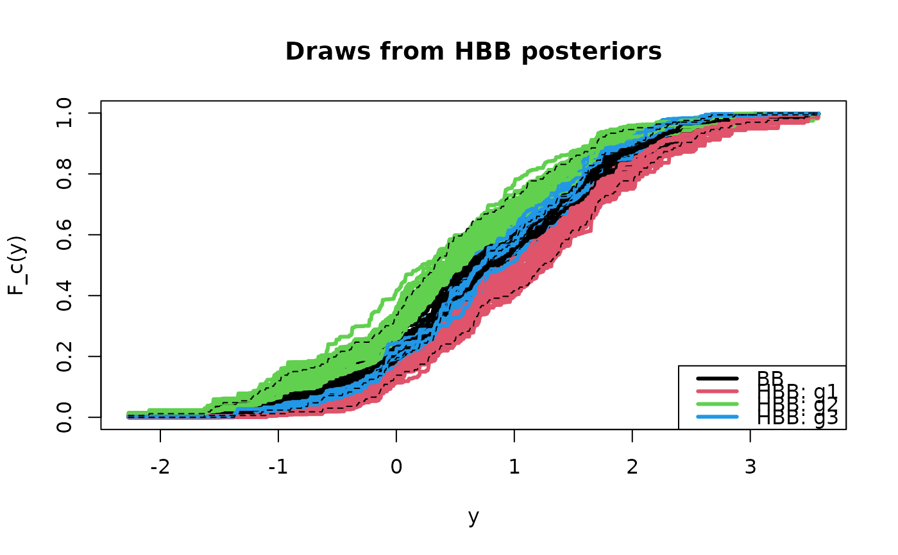

Compute one Monte Carlo draw from the hierarchical Bayesian bootstrap (HBB) posterior distribution of the cumulative distribution function (CDF) for each group. The common (BB) and group-specific (HBB) weights are also returned.
Usage
hbb(
y,
groups,
sample_alphas = FALSE,
shape_alphas = NULL,
rate_alphas = NULL,
alphas = NULL,
M = 30
)Arguments
- y
the data from which to infer the group-specific CDFs
- groups
the group assignment for each element of
y- sample_alphas
logical; if TRUE, sample the concentration hyperparameters from their marginal posterior distribution
- shape_alphas
(optional) shape parameter for the Gamma prior on each
alphas(if sampled)- rate_alphas
(optional) rate parameter for the Gamma prior on each
alphas(if sampled)- alphas
(optional) vector of fixed concentration hyperparameters corresponding to the unique levels in
groups(used whensample_alphas = FALSE)- M
a positive scaling term to set a default value of
alphaswhen it is unspecified (alphas = NULL) and not sampled (sample_alphas = FALSE)
Value
a list with the following elements:
Fyc: a list of functions where each entry corresponds to a group and that group-specific function can evaluate the sampled CDF at any argument(s)weights_y: sampled weights from the common (BB) distribution (n-dimensional)weights_yc: sampled weights from each of theKgroups (K x n)alphas: the (fixed or sampled) concentration hyperparameters
Details
Assuming the data y are independent with unknown,
group-specific distributions, the hierarchical Bayesian bootstrap (HBB) from
Oganisian et al. (https://doi.org/10.1515/ijb-2022-0051) is a nonparametric model
for each distribution. The HBB includes hierarchical shrinkage across these
groups toward a common distribution (the bb). The HBB admits
direct Monte Carlo (not MCMC) sampling.
The shrinkage toward this common distribution is determined by the concentration
hyperparameters alphas. Each component of alphas corresponds to
one of the groups. Larger values encourage more shrinkage toward
the common distribution, while smaller values allow more substantial deviations for that group.
When sample_alphas=TRUE, each component of alphas is sampled from its marginal
posterior distribution, assuming independent Gamma(shape_alphas, rate_alphas)
priors. This step uses a simple grid approximation to enable efficient sampling that
preserves joint Monte Carlo sampling with the group-specific and common distributions.
See concen_hbb for details. Note that diffuse priors on alphas
tends to produce more aggressive shrinkage toward the common distribution (complete pooling).
For moderate shrinkage, we use the default values shape_alphas = 30*K and rate_alphas = 1
where K is the number of groups.
When sample_alphas=FALSE, these concentration hyperparameters are fixed
at user-specified values. That can be done by specifying alphas directly.
Alternatively, if alphas is left unspecified (alphas = NULL),
we adopt the default from Oganisian et al. which sets the cth entry to M*n/nc
where M is user-specified and nc is the number of observations in group c.
For further guidance on the choice of M:
M = 0.01/Kapproximates separate BB's by group (no pooling);Mbetween 10 and 100 gives moderate shrinkage (partial pooling); andM = 100*max(nc)approximates a common BB (complete pooling).
Note
If supplying alphas with distinct entries, make sure that the
groups are ordered properly; these entries should match sort(unique(groups)).
References
Oganisian et al. (https://doi.org/10.1515/ijb-2022-0051)
Examples
# Sample size and number of groups:
n = 500
K = 3
# Define the groups, then assign:
ugroups = paste('g', 1:K, sep='') # groups
groups = sample(ugroups, n, replace = TRUE) # assignments
# Simulate the data: iid normal, then add group-specific features
y = rnorm(n = n) # data
for(g in ugroups)
y[groups==g] = y[groups==g] + 3*rnorm(1) # group-specific
# One draw from the HBB posterior of the CDF:
samp_hbb = hbb(y, groups)
names(samp_hbb) # items returned
#> [1] "Fyc" "weights_y" "weights_yc" "alphas"
Fyc = samp_hbb$Fyc # list of CDFs
class(Fyc) # this is a list
#> [1] "list"
class(Fyc[[1]]) # each element is a function
#> [1] "function"
c = 1 # try: vary in 1:K
Fyc[[c]](0) # some example use (for this one draw)
#> [1] 0.9332497
Fyc[[c]](c(.5, 1.2))
#> [1] 0.9645813 0.9920757
# Plot several draws from the HBB posterior distribution:
ys = seq(min(y), max(y), length.out=1000)
plot(ys, ys, type='n', ylim = c(0,1),
main = 'Draws from HBB posteriors', xlab = 'y', ylab = 'F_c(y)')
for(s in 1:50){ # some draws
# BB CDF:
Fy = bb(y)
lines(ys, Fy(ys), lwd=3) # plot CDF
# HBB:
Fyc = hbb(y, groups)$Fyc
# Plot CDFs by group:
for(c in 1:K) lines(ys, Fyc[[c]](ys), col=c+1, lwd=3)
}
# For reference, add the ECDFs by group:
for(c in 1:K) lines(ys, ecdf(y[groups==ugroups[c]])(ys), lty=2)
legend('bottomright', c('BB', paste('HBB:', ugroups)), col = 1:(K+1), lwd=3)
